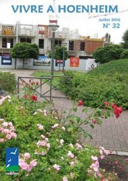
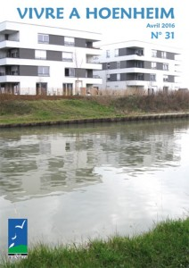
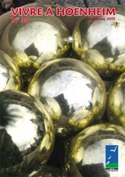

Le mag
Vivre à Hoenheim N°34

Au sommaire : démarrage du chantier du dépôt d’incendie Hoenheim-Souffelweyersheim, fin de celui de l’éco-quartier, rencontre avec les habitants du quartier des oiseaux et des Hirondelles, les rendez-vous culturels du 1er trimestre 2017 …
Vivre à Hoenheim N°33

Au sommaire : les réunions de quartiers au Centre et au Champfleury, le chantier de l’école maternelle du Centre, la fibre optique, les travaux municipaux de l’été, la rentrée scolaire, les rendez-vous « musique et Culture », bilan du Forum des Seniors, le mur rue des Vosges …
Vivre à Hoenheim N°32

Au sommaire : les chantiers en cours ou à venir, réunions publiques pour quatre quartiers, le choix de l’artiste pour le projet artistique du mur, rue des Vosges, le label éco-école pour Bouchesèche, gros plan sur les AMAT, le lauréat hoenheimois de « Chasseurs d’appart’ »…
Vivre à Hoenheim N°31

Au sommaire : trois conseils municipaux, permanences pour le PLU, réunion publique au Ried, Forum des seniors, démarches en cas de canicule, actions de solidarité …
Vivre à Hoenheim N°30

Au sommaire : la démolition du centre commercial du Ried, les projets de l’école maternelle du Centre et de la Maison de la Musique, des réunions de quartiers, le projet de la rue du Lion, les NAP en maternelles, les animations du premier trimestre 2016, le futur commerce Vival by Casino, le Petit Clou, les sportifs […]